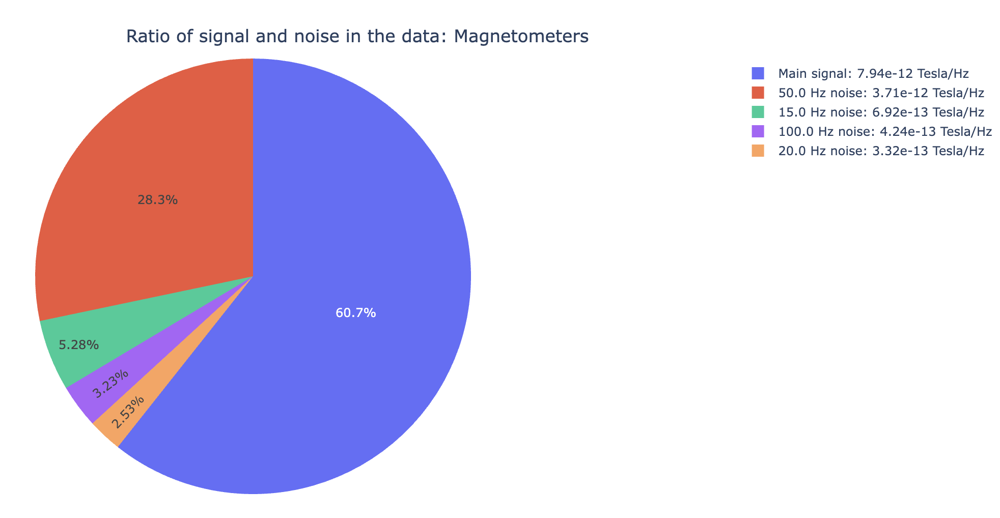
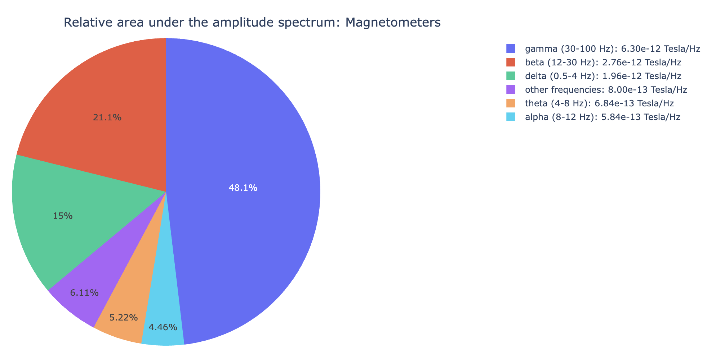
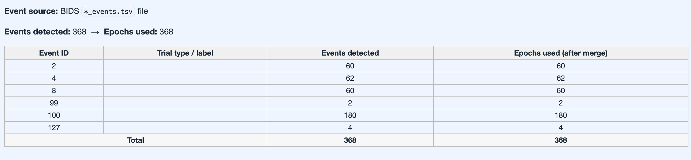
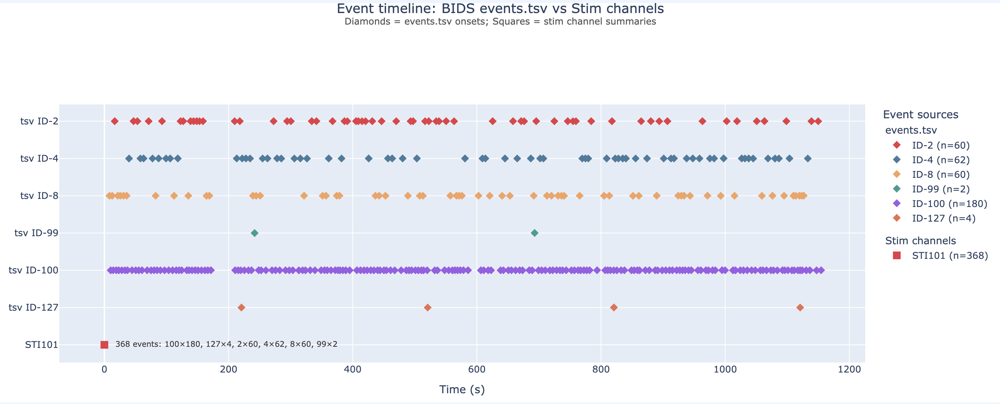
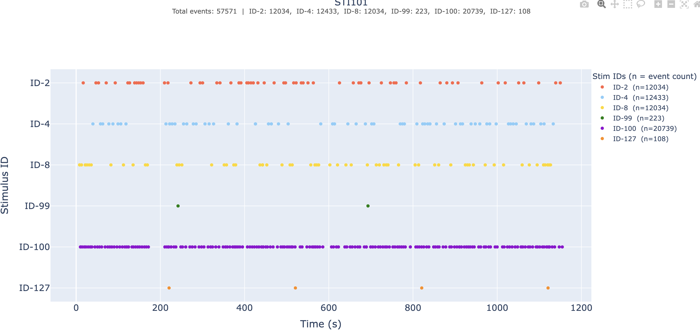
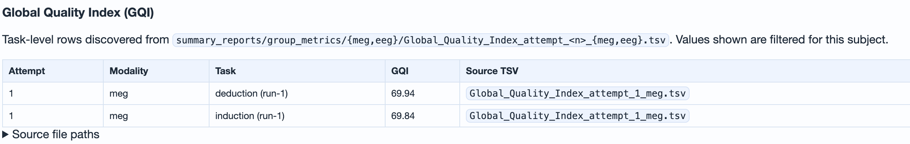

Seven QA metrics, one QC layer on top.
MEEGqc separates quality assessment (QA: continuous, descriptive measurements) from quality control (QC: criterion-based decisions). Each metric below contributes a QA layer that can be inspected in the reports, plus a QC layer that feeds the Global Quality Index.
QA vs QC, made concrete
Every metric on this page produces two complementary outputs layered on the same calculation. Keeping them separate is the single most important conceptual choice in MEEGqc.
QA · the measurement
Continuous, unthresholded descriptors of the signal: distributions, power spectra, time courses, spatial patterns. Stored as per-subject TSV and JSON derivatives and surfaced in the subject- and dataset-level QA reports.
QC · the decision
Threshold-derived flags: noisy / flat channel %, high-correlation channel %, muscle event rate, etc. Written during the same calculation step but as criterion-based summaries. They feed the dataset-level QC report and the Global Quality Index.
STD · Standard Deviation
Per-channel, per-epoch standard deviation. The simplest and most informative variability indicator. Captures amplitude dispersion independent of waveform shape.
QA: how the measurement works
For each channel c and epoch t,
MEEGqc computes STD[c, t] = std(signal_{c, t})
on the preprocessed signal. The subject-level QA report
shows three panels per channel type:
- 2D and 3D topomap with sensors colour-coded by STD.
- Distribution boxplot with one dot per channel.
- Channel x epoch heatmap with marginal profiles. Horizontal bands = persistent issues (bad channel); vertical bands = transient bursts (bad epoch).
QC: how decisions are derived
- Noisy channel: per-epoch STD >
noisy_channel_multiplier × mean. - Flat channel: per-epoch STD <
flat_multiplier × mean. - A channel is flagged only when more than
allow_percent_noisy_flat_epochsof its epochs are in the same state (default 70 %).
The resulting noisy / flat channel percentages feed both
the dataset-level QC report and the ch family of
the GQI.
Settings
See [STD]:
std_lvl, noisy_channel_multiplier,
flat_multiplier,
allow_percent_noisy_flat_epochs.
PtP · Peak-to-Peak amplitude
The total range of variation per epoch:
max(signal) - min(signal). Catches transient
bursts and outlier excursions that STD averages out. Ships
in two flavours: PtP (manual), MEEGqc's
own Numba-accelerated path, and PtP (auto),
MNE's automatic epoch annotation (off by default).
QA
Same three-panel grammar as STD (topomap / distribution / channel x epoch heatmap) on the peak-to-peak amplitude instead of the standard deviation.
QC
Same noisy / flat logic as STD. Together with STD it drives
the ch family of the GQI.
Settings
See
[PTP_manual]:
numba_version, max_pair_dist_sec,
ptp_thresh_lvl,
noisy_channel_multiplier,
flat_multiplier.
PSD · Power Spectral Density
Welch periodogram per channel. The most direct view of frequency-domain noise: mains harmonics (50 / 60 Hz and multiples), broadband contamination, movement-related spectral broadening.
QA
The subject-level QA report adds an SNR triage plot and a relative-band amplitude view per channel:
- Narrow tall peaks at fixed frequencies = line noise.
- Broad elevation across channels = environmental broadening or motion-related noise.
- Channel-specific peaks = localised hardware issues.
QC
MEEGqc estimates a PSD noise percentage
per recording (the fraction of total spectral power
concentrated at mains frequencies and their harmonics).
This feeds the psd family of the GQI.
Settings
See [PSD]:
freq_min, freq_max,
psd_step_size.


ECG · Cardiac contamination
Detects R-peaks in the dedicated ECG channel; falls back to reconstructing them from magnetometers if the ECG channel is judged unreliable. Then quantifies, per MEG / EEG sensor, how much of the cardiac signature leaks into that sensor by correlating each sensor's average artifact waveform against the mean R-wave.
QA · the four-step procedure
-
Sanity-check the ECG channel. Before
trusting the reference, MEEGqc applies three conditions
(
check_3_conditionsinECG_EOG_meg_qc.py):- Similar amplitudes: the std of detected peak
amplitudes must stay below
allowed_range_of_peaks_stds. - No long breaks: gaps between R-peaks must stay below 1.6 s (heart rate floor of ~40 bpm).
- No bursts: gaps must stay above 0.6 s (ceiling of ~100 bpm).
0.5) instead of an unfair penalty. - Similar amplitudes: the std of detected peak
amplitudes must stay below
- Build the mean R-wave. Epoch the recording around each detected peak, average across epochs.
- Per-sensor average artifact. For each MAG / GRAD / EEG channel, average across the same epochs to get that channel's "average ECG artifact" trace.
- Correlate with the mean R-wave. Align each sensor's average artifact with the mean R-wave (best time-shift maximises Pearson correlation; absolute value of the coefficient is used, because some channels are flipped relative to the heart vector).
QA · the report tabs
- General subtab: raw ECG with detected peaks, plus the mean R-wave used for correlation.
- MAG / GRAD / EEG subtabs: 3D topomap of
abs(corr)across sensors, plus three ranked-and-grouped panels: most affected, moderately affected, and least affected. Channels are sorted byabs(corr_coef)and split into equal thirds (split_correlated_artifacts_into_3_groups). Each panel overlays the per-channel average artifact on the mean R-wave so you can read off how closely each group tracks the cardiac signature.
QC
Channels with abs(corr_coef) above a fixed
operational threshold (0.8 in the current code)
are counted. The resulting high-correlation channel
% per recording feeds the corr family
of the GQI. The same percentage is also
shown on the dataset-level QC report's
ECG tab.
Settings
See [ECG]:
n_breaks_bursts_allowed_per_10min,
allowed_range_of_peaks_stds,
height_multiplier, and
norm_lvl (the threshold multiplier above the
mean artifact peak used to flag channels as affected).
What the report looks like
abs(corr_coef): brighter
sensors carry more cardiac contamination.Three buckets of affected channels
Channels are ranked by abs(corr_coef) and split
into thirds. Each panel overlays the per-channel artifact
(coloured) on the mean R-wave (reference).
abs(corr_coef). Tight tracking of the mean
R-wave.EOG · Ocular contamination
Same shape as the ECG pipeline, applied to EOG channels
(blinks and saccades). EOG is noisier than ECG and blink
intervals are far more variable, so MEEGqc relaxes the
sanity-check tolerances and uses a larger
gaussian_sigma for smoothing.
QA · the four-step procedure
-
Sanity-check the EOG channel. Same three
conditions as ECG, with blink-specific bounds:
- Similar amplitudes: scaled std of detected
peak amplitudes within
allowed_range_of_peaks_stds. - No long breaks: gaps between blinks must stay below ~10 s (lowest plausible blink rate ~6/min).
- No bursts: gaps must stay above ~1 s (ceiling of ~60 blinks/min, which is high but real in some recordings).
0.5). - Similar amplitudes: scaled std of detected
peak amplitudes within
- Build the mean blink wave. Epoch the EOG around each detected blink, average across epochs.
- Per-sensor average artifact. For each MAG / GRAD / EEG channel, average across the same epochs to get the channel's average blink-locked trace.
-
Correlate with the mean blink. Best
time-shifted Pearson correlation between sensor and mean
blink;
abs(corr_coef)because some channels are flipped.
QA · the report tabs
- General subtab: raw EOG with detected blinks, and the mean blink wave used for correlation.
- MAG / GRAD / EEG subtabs: 3D topomap of
abs(corr)(frontal concentration is expected), plus the same three ranked-and-grouped panels as ECG: most affected, moderately affected, least affected.
QC
Same logic as ECG: channels with abs(corr_coef)
above the operational threshold (0.8) are
counted; the resulting high-correlation channel % feeds the
corr family of the GQI. When
both ECG and EOG are enabled, the corr weight
is split between them; the dataset-level QC report shows the
per-subject percentage on the
EOG tab.
Settings
See [EOG]:
same knobs as [ECG], with EOG-specific defaults
(larger gaussian_sigma, looser amplitude
tolerance).
What the report looks like
abs(corr_coef);
frontal concentration is the expected pattern.Three buckets of affected channels
Channels are ranked by abs(corr_coef) and split
into thirds. Each panel overlays the per-channel artifact
(coloured) on the mean blink wave (reference).
abs(corr_coef). Tight tracking of the mean
blink, usually frontal sensors.Muscle · High-frequency muscle noise
Power in the muscle band tracks jaw clenches, neck tension, and similar movement artifacts.
QA
MEEGqc applies a band filter and z-score thresholding to annotate high-frequency events. The band is modality-aware:
- MEG:
110 - 140 Hz(default). - EEG:
20 - 100 Hz. EEG muscle artifacts sit at lower frequencies than MEG; configured viamuscle_freqs_eeg.
QC
The muscle event ratio feeds the
mus family of the GQI.
Settings
See [Muscle]:
muscle_freqs, muscle_freqs_eeg,
threshold_muscle, min_length_good.
Head movement
MEG-only metric. Uses continuous head localisation (cHPI)
data to quantify movement across the recording in six
directions (x, y, z
translations; q1, q2,
q3 rotation quaternion components). Off by
default; enable with Head = True in
[GENERAL].
Stimulus channels
Not a QA metric per se but a sanity-check view in the
subject-level report. Reads events from BIDS
_events.tsv first, then falls back to the raw
stim channels. Confirms event count, timing, and
trial-type distribution.


_events.tsv.
Lobe palette
Lobe colours are shared across every plot and every report scope. For EEG, lobes are inferred from 10-20 / 10-10 / 10-05 channel-name conventions; for MEG, from the manufacturer's sensor location tables.
| Region | Left | Right |
|---|---|---|
| Frontal | #1f77b4 | #ff7f0e |
| Temporal | #2ca02c | #9467bd |
| Parietal | #e377c2 | #d62728 |
| Occipital | #bcbd22 | #17becf |
| Central | #8c564b | - |
| Reference | #7f7f7f | - |
Global Quality Index (GQI)
The Global Quality Index is the QC aggregation layer. It converts the per-metric QC outputs above into one composite 0-100 score per recording, with a transparent penalty decomposition that explains exactly which family dragged the score down.

Inputs: four penalty families
ch · Channel variability
From STD and PtP noisy / flat channel percentages.
corr · Correlation
From ECG / EOG high-correlation channel percentages.
mus · Muscle
From the muscle event ratio.
psd · PSD noise
From the estimated spectral noise contribution.
Default thresholds and weights
From
[GlobalQualityIndex]:
| Family | Parameter prefix | Start | End | Weight |
|---|---|---|---|---|
ch (bad channels) | bad_ch_* | 0 | 100 | 35 |
corr (ECG / EOG) | correlation_* | 0 | 100 | 30 |
mus (muscle) | muscle_* | 0 | 0.0001 | 15 |
psd (PSD noise) | psd_noise_* | 0 | 100 | 20 |
Weights are integers that sum to 100 and are internally
normalised over the active families. The
corr weight is split between ECG and EOG when
both are enabled.
Per-family quality transform
For a per-family raw measurement M (e.g. noisy
channel %, high-correlation channel %, muscle event count,
PSD noise %) with start and end
thresholds, the per-family quality is piecewise linear:
if M <= start: q(M) = 1.0
if M >= end: q(M) = 0.0
otherwise: q(M) = 1 - (M - start) / (end - start)
Final GQI score
Let q_ch, q_corr_ecg,
q_corr_eog, q_mus,
q_psd be the per-family qualities and
w_* their weights:
GQI = 100 * (w_ch*q_ch + w_ecg*q_corr_ecg + w_eog*q_corr_eog
+ w_mus*q_mus + w_psd*q_psd) / sum(weights_used)
Penalty terms are reported per family and proportional to
(1 - q_family) · weight:
GQI_penalty_chGQI_penalty_corrGQI_penalty_musGQI_penalty_psd
Special handling
- If the ECG / EOG description marks the reference
channels as noisy / invalid, correlation quality is
clamped to a fallback value (
q = 0.5) instead of computed from percentages. - If a family metric is missing, its default quality is
1.0and only the active weights contribute to normalisation. - GQI can be disabled with
compute_gqi = False; the per-metric summaries are still written.
Storage, attempts, and provenance
GQI is versioned by attempt. Each run of
globalqualityindex writes a new per-modality
TSV plus a frozen configuration snapshot:
Output columns
| Category | Columns |
|---|---|
| Identifiers | task, subject, modality |
| Global score | GQI |
| Penalty terms | GQI_penalty_ch, GQI_penalty_corr, GQI_penalty_mus, GQI_penalty_psd |
| Component percentages | GQI_bad_pct, GQI_std_pct, GQI_ptp_pct, GQI_ecg_pct, GQI_eog_pct, GQI_muscle_pct, GQI_psd_noise_pct |
| Sub-metric counts | STD_ts_*, STD_ep_*, PTP_ts_*, PTP_ep_*, ECG_*_high_corr_*, EOG_*_high_corr_*, PSD_noise_*_percentage, Muscle_events_num |
| Parameters | param_*: the exact GQI thresholds and weights for the attempt |
Sensitivity-analysis workflow
- Keep the calculation derivatives fixed.
- Edit only the
[GlobalQualityIndex]section in your settings. - Re-run
globalqualityindex. A new attempt file is written alongside the previous ones. - Compare attempts in the dataset-level QC report with
--attempt <n>.
This isolates threshold effects without recomputing any raw metric.
Recompute commands
globalqualityindex --inputdata /path/to/dataset
globalqualityindex --inputdata /path/to/dataset \
--analysis_mode reuse-profile \
--analysis_id qa_pass_01
QA/QC calculation tab → Run GQI. Use Stop GQI to interrupt mid-run.
from meg_qc.test import run_gqi_dispatch
run_gqi_dispatch(
dataset_paths=["/path/ds1", "/path/ds2"],
default_config_file_path="./config/settings.ini",
analysis_mode="reuse-profile",
analysis_id="qa_pass_01",
)
Next: the reports reference for how these metrics surface in the HTML output, or the settings reference to tune any of the knobs above.